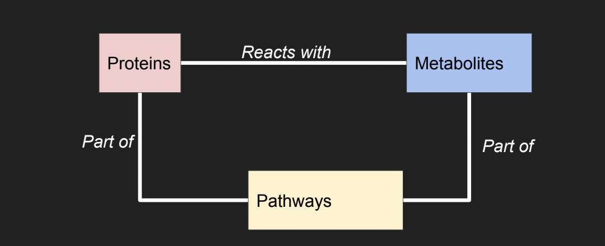
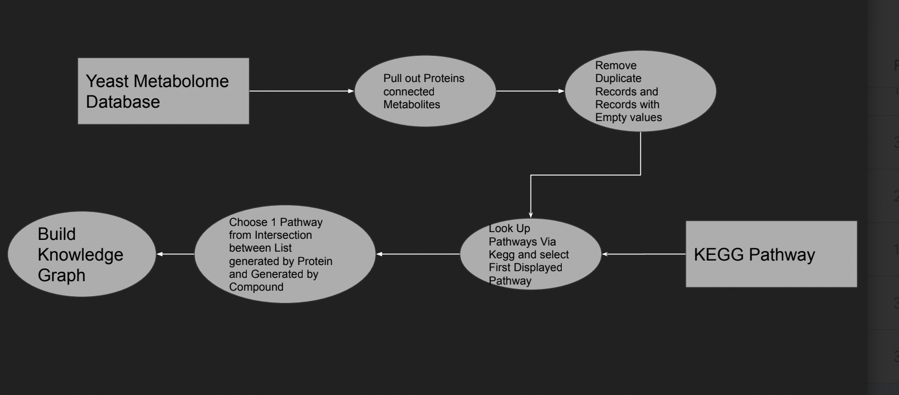

Title: Minimum Metabolic Pathways with the Yeast Metabolome
Explored by: Timothy Hamilton, Maria Flores
Motivation
- Yeast is a model organism for development and evolution due to its unique Evolutionary history
- It’s metabolism has analogous steps to most Eukaryotes ● Used to determine what is needed to make “minimally viable cell” ○ What are the minimum number of pathways needed and inputs given for cell to display the qualities of life
Knowledge Graph
Represent the metabolic functions and inputs present in Yeast to determine distinct groupings
Sources: Yeast Metabolic Database and Kegg Pathway

Workflow

Summary Statistics
Tutorial: Google Colab notebook is available here
Issues and Further Steps.
- Duplicate and Missing Records in Yeast Metabolome
- Largely due to lack support and obsolete Data (Group that created database moved on to humans)
- Duplicate records means number of records severely over inflated
- Requires data to be published first
- Multiple pathways given when looking up a particular Protein or metabolite ○ Choose the first 1 displayed, but this results in bias
- Combined with issue 1, limits utility of knowledge graphs, underscoring need for homologation ● Further work
- Include specific reactions to help narrow down which pathways per protein-Metabolite pair ○ Apply more formal graph theoretical approaches to analyze the data
- Weighted graphs to measure uncertainty?